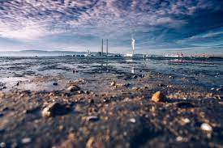
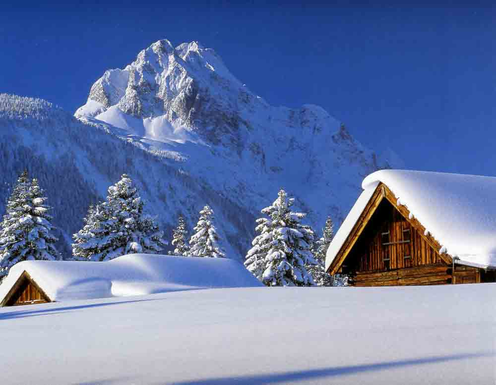

Click To See the Images
Go To Google
Go To First Para
Go To 2nd Para
Go To 3rd Para
First Paragraph
A Paragraph on Pollution in about 100-150 Words:
The word pollution was derived from the Latin word pollution, which means to make dirty. Pollution is the process of making the environment pollute the water and the air by adding harmful substances. Pollution causes an imbalance in the environment. This imbalance threatened the very survival of all forms of life. It's a threat to the whole world. India ranks at the bottom of the 125 of the 132 countries in the 2012 Environmental Performance Index. This report is produced by researchers at Yale and Columbia University in association with the World Economic Forum.Pollution of the environment is a serious problem of industrialized societies. Industrial development and the green revolution have had a negative impact on the environment. People have converted the life support system of all living people into their own resources and have greatly disrupted the natural ecological balance. Serious degradation and depletion have been caused due to overuse, abuse and mismanagement of resources to meet human greed.Environmental pollution is defined as the adverse alteration of our environment. It is a by - product of human activities that directly or indirectly responsible of the changes in the environment. These changes could be in the physical, chemical or biological characteristics of air or water that are harmful to human life and other living things. Population explosion, rapid industrialization, deforestation, unplanned urbanization, scientific and technological advancement, etc. The main causes of environmental pollution. About 35% of India's total area is seriously polluted. Three-quarters of the land is water, but there is a shortage of drinking water. In India, water sources are found in ponds and river lakes have been polluted and are unfit for consumption. Due to the increased use of fertilizers, seas and oceans have been contaminated with harmful pollutants.Industrialization has led to urbanization. The migration of the rural population to cities in search of work has created an unhealthy environment. This has led to overcrowding and the establishment of slum areas. Cities and cities are full of smoke, smoke, dust, gas, smell and noise.Nuclear explosions and nuclear tests also pollute the air. The spread of radioactive material in the air has increased. This radioactive pollution can cause cancer, abnormal births and mutations in men.The Taj Mahal in Agra is affected by the fumes emitted by the Mathura refinery. The reports estimate that the monument would be destroyed in twenty years because of the harmful effluents from the refinery's emissions.Water pollution changes the quality of the water. This disrupts the balance of the ecosystem and poses health risks. Water is polluted by the presence or addition of inorganic and organic or biological substances. Industrial effluents that are discharged into rivers further increase the levels of water pollution.Soil pollution usually results from the elimination of solid and semi-solid wastes from agricultural practices and unhealthy habits. The soil is heavily polluted by hazardous materials and micro-organisms that enter the food chain or water and create many health problems.

2nd Paragragh
Winter Season:
Winter is the coldest season of the year in some parts of the northern and southern hemisphere, this season is characterized by falling snow and freezing cold temperatures, usually exacerbated by strong winds. The season which usually lasts about three months is caused by the winter-stricken area being farthest away from the sun in the earth’s orbit around it.Most schools take breaks during this period, whilst business in offices slows and schedules are rearranged according to the whims of the season. Around this time, the days are short and nights longer, this usually reverse slowly as the season progresses. The sun comes out very late on winter mornings and when it does is not hot.People rarely come outdoors until daylight; most sit indoors by the fireside in the mornings and evenings. Everyone sees the essence of the weather report during winter, this service assumes added importance as the information they present can be the difference between having proper protective clothing and freezing to death, knowing if the roads would be navigate-able tomorrow morning, or if the night’s blizzard has called off engagements on their behalf.Most people wake up to shovel snow out of their paths on winter mornings. On some particularly severe occasions, snow and strong winds has blocked roads and grounded flights, even frozen rivers for days, week and months.People clothe themselves in thick apparels during winter to ward off the cold and keep their bodies warm, over the year’s winter clothing has evolved, today styles and designs are incorporated into them, far from the tattered animal skin that early man in these areas used to protect himself from the same grim weather.In winter affected areas of the world, several outdoor and sporting activities have been designed to take advantage of the weather and give the people a chance to exercise and bring themselves some joy. These activities, taken as tradition and practiced at every winter (some depending on the ice level) includes; curling, ice skating, ice racing, ice sculpture, ice hockey, ice fishing, ice climbing, ice boating and more.Plants and animal life respond to winter in varying ways. Some animals such as birds migrate when the winter season is approaching and only return during the summer, this is to ensure food supply as most of their food sources freeze in the winter.Others go into hibernation, a state resembling sleep where the animal remains inactive, usually housed in a shell, remaining so until summer arrives. Some animals profusely gather and store food, in preparation for winter months when the sources are dead and gathering impossible. In response to the weather most animals have also adapted themselves, by developing thick furs that keep them warm during this season, others such as the snowshoe hare changes colour to white and becomes indistinguishable from the snow as a survival tactic.Whilst some plants completely die off in winter, others actually need the season to complete their life cycle. Some plants buried in snow are as a result insulated by it and survive the weather, some trees lose all their leaves during this season, but their roots are active, protected by the thick layers of snow that covers the earth surface.Winter is also a time of fruits, many fruits such as guava and oranges as well as many vegetables become available during winter. Often times people complain of winter, cursing the cold and praying for the summer, but if we did not have winter, can we truly appreciate summer and vice versa?

3rd Paragraph
Education:
Education is the biggest deterrent to exploitation, it is also the threshold of development. The fundamental factor of material prosperity in the middle of the twentieth century was the scientific and technological advancement and the development of the industries and agriculture that resulted in this.In the second half of the twentieth century, developed and developing countries ran in this direction as soon as possible and found that prosperity in developed countries increased considerably. However, despite scientific and technological development, developing countries continue to suffer from economic variation, population growth, unemployment, illiteracy, malnutrition and pollution.Therefore, after the experience of development in the last 5-6 decades of the world, the condition and process of development of the developing countries have been reoriented and as a result, the universalisation of qualitative education has emerged prominently in the factors of balanced development of society.The recipient of the Nobel Prize for Economics, Indian-American Overseas Economist Prof. Amartya Sen has also exposed the concept of public educational development globally in the context of developing countries. Therefore, along with economic factors of development, social-services related factors, which also have a paramount place of public education-related factors, hold their importance.